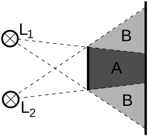
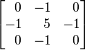

Workshop 2
- convert an index into column and row indices
- use the column and row values to do more than just change colours
- Learn about the kernel and convolusion
The Workshop
- In the last workshop, we focused on each pixel, individually
- In this workshop, we will not only focus on a particular pixel, we will also be focusing on its neighbouring pixels
- We will be using something called a "kernel" to help us achieve some cool effects
Converting an index into column and row indices
var col = index % width;
var row = Math.floor(index / width);
Sometimes, col (or column) and row are called x and y, respectively.
Converting column and row indices into an array index
var index = col + (row * width);
Blurring
Before we go ahead with the kernel, let's take some baby steps by first talking about blurring
What blurring is
A best way to illustrate blurring is through shadows
The penumbra is a simultaneous mixture of absence of light, and the presence thereof
What blurring is (cont'd)
- similar idea for images
-
blurring is an intended colour mixed with neighbouring light sources
- Remember: another way think of images---that our eyes see---as being a quasi-infinite array of light sources. If they mix, the images appear blurred
Applying to digital images
- To blur an image, we iterate over every pixel, and we hollistically derive a value based on each pixel's neighbour
- a simple way to derive such value is to simply calculate the average
-
Below is a simple blur applied to the Mona Lisa's Eye
The Algorithm
This is for a simple box blur
var kernelDimension = 3;
var kernelSize = kernelDimension * kernelDimension;
for (var i = 0; i < pixels.length; i++) {
var col = index % width;
var row = Math.floor(index / height);
var accum = 0;
for (var x = 0; x < kernelDimension; x++) {
for (var y = 0; y < kernelDimension; y++) {
var lookupX = col + x - 1; if (lookupX < 0) { lookupX = 0; }
var lookupY = row + y - 1; if (lookupY < 0) { lookupY = 0; }
var index = lookupX + (lookupY * width);
accum += pixels[index];
}
}
pixels[i] = accum / kernelSize;
}
This is just a demonstration. Actual code is different
Another way to compute the pixel: multiply based on a kernel table
- the kernel is a square matrix of numbers. It has an odd number of rows and columns
- the pixel values are multiplied by the values in the kernel, and then added together, and the pixel is then set to their sum
-
Below is an example kernel used for box blur
[ 0.111, 0.111, 0.111, 0.111, 0.111, 0.111, 0.111, 0.111, 0.111 ]
Question: why have all the values been set to 0.111?
The Algorithm for our kernel
var kernel =
[ 0.111, 0.111, 0.111,
0.111, 0.111, 0.111,
0.111, 0.111, 0.111 ]
var kernelDimension = 3;
var kernelSize = kernelDimension * kernelDimension;
for (var i = 0; i < pixels.length; i++) {
var col = i % width;
var row = Math.floor(i / width);
var accum = 0;
for (var j = 0; j < kernelSize; j++) {
var x = j % kernelDimension;
var y = Math.floor(j / kermelDimension);
var lookupX = col + x - 1; if (lookupX < 0) { lookupX = 0; }
var lookupY = row + y - 1; if (lookupY < 0) { lookupY = 0; }
var index = lookupX + (lookupY * width);
accum += pixels[index] * kernel[j];
}
pixels[i] = accum;
}
This is just a demonstration. Actual code is different
Effects that can be achieved using the Kernel
Sharpen


Effects that can be achieved using the Kernel
Box Blur
Effects that can be achieved using the Kernel
Gaussian Blur
Effects that can be achieved using the Kernel
Edge Detection
Effects that can be achieved using the Kernel
Edge Detection, another way

Effects that can be achieved using the Kernel
Edge Detection, yet another way